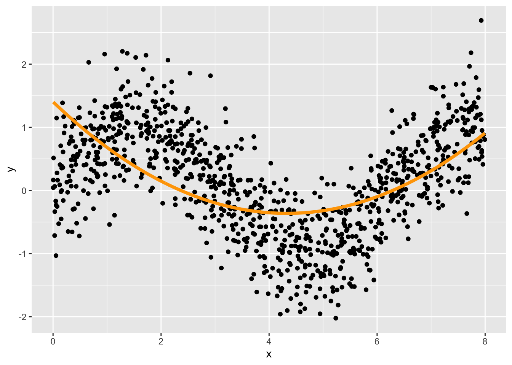
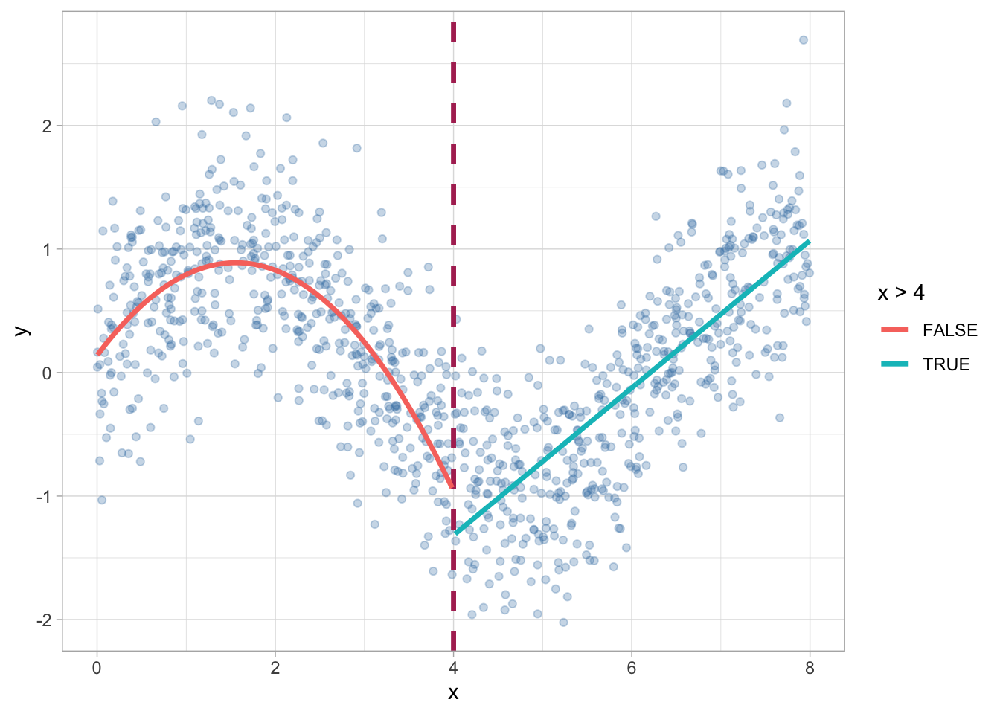

library(ggplot2)
library(dplyr)
set.seed(123)
x<-runif(1000,0,8)
y<-rnorm(1000, sin(x), 0.5)
data <- data.frame(x,y)
data %>% ggplot()+
geom_point(aes(x=x, y=y),col="steelblue", alpha=0.6)+
theme_light()Polynomial Regression and MARs
Multiple regression และ regression โมเดลที่เกี่ยวข้องในบทเรียนก่อนหน้านี้เป็นโมเดลที่อยู่ภายใต้กลุ่มของโมเดลเชิงเส้น (linear model) ที่มีวัตถุประสงค์หลักคือเพื่อเรียนรู้ความสัมพันธ์ภายในข้อมูลที่มีรูปแบบเชิงเส้นตรงเป็นหลัก อย่างไรก็ตามก็อาจมีบางโมเดลที่สามารถใช้เรียนรู้ความสัมพันธ์ที่ไม่ใช่เชิงเส้นได้ คือ regression model with interaction อย่างไรก็ตามโมเดล regression ดังกล่าวก็ยังมีความยืดหยุ่นที่ไม่มากเมื่อเปรียบเทียบกับอัลกอริทึมอื่น ๆ ที่มีในปัจจุบัน โดยบทเรียนนี้จะกล่าวถึงอัลกอริทึม multivariate adaptive regression splines (MARs) ที่กล่าวได้ว่าเป็น linear model ประเภทหนึ่งแต่มีความสามารถสูงในการเรียนรู้ความสัมพันธ์ที่ไม่ใช่เชิงเส้น นอกจากนี้ยังสามารถใช้ได้ทั้งในปัญหาแบบ regression และ classification
Polynomial Regression
MARs เป็นโมเดลที่พัฒนาขึ้นโดยมีพื้นฐานมาจาก polynomial regression หัวข้อนี้จึงจะกล่าวถึงมโนทัศน์ของ polynomial regression ก่อนเพื่อเป็นพื้นฐานในการทำความเข้าใจ MARs ในหัวข้อถัดไป
Basic concept
โมเดลการถดถอยพหุนาม (polynomial regression models) เป็นโมเดลการถดถอยแบบเชิงเส้นที่ใช้วิเคราะห์หรือเรียนรู้ความสัมพันธ์ในข้อมูลแบบที่ไม่ใช่เชิงเส้นตรง โดยใช้ฟังก์ชันพหุนาม (polynomial function) เป็นส่วน systematic part ของโมเดลแทนการใช้ฟังก์ชันเชิงเส้นตรงธรรมดา ลองพิจารณาความสัมพันธ์
จะเห็นว่าความสัมพันธ์ข้างต้นมีลักษณะเป็นเส้นโค้ง การ fit ความสัมพันธ์ดังกล่าวด้วย regression model สามารถทำได้หลายวิธีการ วิธีการแรกคือการใช้ linear model เหมือนเดิมแต่มีการเพิ่ม term พหุนามที่มีดีกรีต่าง ๆ สมการถดถอยพหุนามมีสมการทั่วไปดังนี้
\[ y_i = \beta_0+\beta_1 x_i + \beta_2 x^2_i + \beta_3 x^3_i + ...+ \beta_p x^p_i + \epsilon_i \]
คำสั่งต่อไปนี้แสดงการ fit สมการถดถอยพหุนาม degree 2,3 และ 4 กับข้อมูลข้างต้น (https://en.wikipedia.org/wiki/Degree_of_a_polynomial)
library(tidyr)
linear.fit <- lm(y~x, data = data)
poly2.fit <- lm(y~x + I(x^2), data = data)
poly3.fit <- lm(y~x+I(x^2)+I(x^3), data=data)
poly4.fit <- lm(y~x+I(x^2)+I(x^3)+I(x^4), data=data)
summary(poly2.fit)
Call:
lm(formula = y ~ x + I(x^2), data = data)
Residuals:
Min 1Q Median 3Q Max
-2.39122 -0.44623 0.00919 0.48724 1.99155
Coefficients:
Estimate Std. Error t value Pr(>|t|)
(Intercept) 1.403152 0.065188 21.52 <2e-16 ***
x -0.816456 0.037673 -21.67 <2e-16 ***
I(x^2) 0.094354 0.004569 20.65 <2e-16 ***
---
Signif. codes: 0 '***' 0.001 '**' 0.01 '*' 0.05 '.' 0.1 ' ' 1
Residual standard error: 0.6866 on 997 degrees of freedom
Multiple R-squared: 0.321, Adjusted R-squared: 0.3197
F-statistic: 235.7 on 2 and 997 DF, p-value: < 2.2e-16summary(poly3.fit)
Call:
lm(formula = y ~ x + I(x^2) + I(x^3), data = data)
Residuals:
Min 1Q Median 3Q Max
-1.60503 -0.37429 0.01347 0.38804 1.65828
Coefficients:
Estimate Std. Error t value Pr(>|t|)
(Intercept) 0.414729 0.072795 5.697 1.6e-08 ***
x 0.665338 0.078705 8.454 < 2e-16 ***
I(x^2) -0.369551 0.022892 -16.143 < 2e-16 ***
I(x^3) 0.038733 0.001884 20.555 < 2e-16 ***
---
Signif. codes: 0 '***' 0.001 '**' 0.01 '*' 0.05 '.' 0.1 ' ' 1
Residual standard error: 0.5757 on 996 degrees of freedom
Multiple R-squared: 0.5233, Adjusted R-squared: 0.5218
F-statistic: 364.4 on 3 and 996 DF, p-value: < 2.2e-16summary(poly4.fit)
Call:
lm(formula = y ~ x + I(x^2) + I(x^3) + I(x^4), data = data)
Residuals:
Min 1Q Median 3Q Max
-1.58032 -0.35378 0.01344 0.33812 1.73464
Coefficients:
Estimate Std. Error t value Pr(>|t|)
(Intercept) -0.3817872 0.0816978 -4.673 3.37e-06 ***
x 2.6435685 0.1418019 18.643 < 2e-16 ***
I(x^2) -1.4777624 0.0719822 -20.530 < 2e-16 ***
I(x^3) 0.2536516 0.0134917 18.801 < 2e-16 ***
I(x^4) -0.0134086 0.0008352 -16.055 < 2e-16 ***
---
Signif. codes: 0 '***' 0.001 '**' 0.01 '*' 0.05 '.' 0.1 ' ' 1
Residual standard error: 0.5133 on 995 degrees of freedom
Multiple R-squared: 0.6213, Adjusted R-squared: 0.6198
F-statistic: 408.2 on 4 and 995 DF, p-value: < 2.2e-16data %>% bind_cols(linear = predict(linear.fit),
quadratic = predict(poly2.fit),
cubic = predict(poly3.fit),
quartic = predict(poly4.fit)) %>%
gather(linear:quartic, key = "model", value = "pred") %>%
mutate(model = factor(model, levels=c("linear",
"quadratic",
"cubic",
"quartic"))) %>%
ggplot(aes(x=x, y=y))+
geom_point(col = "steelblue", alpha=0.7)+
geom_line(aes(y=pred))+
facet_wrap(vars(model))ปัญหาของ polynomial regression คือ multicollinearity
library(car)
vif(poly2.fit) x I(x^2)
15.90657 15.90657 vif(poly3.fit) x I(x^2) I(x^3)
98.7773 568.2299 221.9771 การแก้ปัญหา multicollinearity สามารถทำได้หลายวิธีการ วิธีการแรกคือการ centering ตัวแปรอิสระ ดังนี้
data %>%bind_cols(
pred2 = data %>%
mutate(x_c = x-mean(x)) %>%
lm(y~x_c+I(x_c^2),data=.) %>%
predict(.)
)%>%
ggplot(aes(x=x,y=y))+
geom_point(col="steelblue",alpha=0.6)+
geom_line(aes(y=pred2))data %>%
mutate(x_c = x-mean(x)) %>%
lm(y~x_c+I(x_c^2),data=.) %>%
vif() x_c I(x_c^2)
1.000162 1.000162 data %>%
mutate(x_c = x-mean(x)) %>%
lm(y~x_c+I(x_c^2)+I(x_c^3),data=.) %>%
vif() x_c I(x_c^2) I(x_c^3)
6.173692 1.000595 6.175168 อีกวิธีการหนึ่งคือการแปลงตัวแปรอิสระที่มี degree ของโมเดลให้เป็นด้วยพหุนามเชิงตั้งฉาก (orthogonal polynomial) http://home.iitk.ac.in/~shalab/regression/Chapter12-Regression-PolynomialRegression.pdf
การสร้างเทอมพหุนามเชิงตั้งฉากใน R สามารถทำได้โดยใช้ฟังก์ชัน poly() ดังนี้
poly2.fit <- lm(y~poly(x,2), data=data)
summary(poly2.fit)
Call:
lm(formula = y ~ poly(x, 2), data = data)
Residuals:
Min 1Q Median 3Q Max
-2.39122 -0.44623 0.00919 0.48724 1.99155
Coefficients:
Estimate Std. Error t value Pr(>|t|)
(Intercept) 0.14695 0.02171 6.768 2.23e-11 ***
poly(x, 2)1 -4.59769 0.68664 -6.696 3.57e-11 ***
poly(x, 2)2 14.18116 0.68664 20.653 < 2e-16 ***
---
Signif. codes: 0 '***' 0.001 '**' 0.01 '*' 0.05 '.' 0.1 ' ' 1
Residual standard error: 0.6866 on 997 degrees of freedom
Multiple R-squared: 0.321, Adjusted R-squared: 0.3197
F-statistic: 235.7 on 2 and 997 DF, p-value: < 2.2e-16data %>% bind_cols(pred = predict(poly2.fit)) %>%
ggplot(aes(x=x, y=y))+
geom_point()+
geom_line(aes(y=pred), col="orange", linewidth = 1.5)
Polynomial Regression in tidymodels
library(tidymodels)── Attaching packages ────────────────────────────────────── tidymodels 1.0.0 ──✔ broom 1.0.3 ✔ rsample 1.1.1
✔ dials 1.1.0 ✔ tibble 3.1.8
✔ infer 1.0.4 ✔ tune 1.0.1
✔ modeldata 1.1.0 ✔ workflows 1.1.3
✔ parsnip 1.0.4 ✔ workflowsets 1.0.0
✔ purrr 1.0.1 ✔ yardstick 1.1.0
✔ recipes 1.0.5 ── Conflicts ───────────────────────────────────────── tidymodels_conflicts() ──
✖ purrr::discard() masks scales::discard()
✖ dplyr::filter() masks stats::filter()
✖ dplyr::lag() masks stats::lag()
✖ car::recode() masks dplyr::recode()
✖ purrr::some() masks car::some()
✖ recipes::step() masks stats::step()
• Dig deeper into tidy modeling with R at https://www.tmwr.orgdat <- read.csv("https://raw.githubusercontent.com/ssiwacho/2758688_ML/main/week%201/TeacherSalaryData.csv")
head(dat) X rank discipline yrs.since.phd yrs.service sex salary
1 1 Prof B 19 18 Male 139750
2 2 Prof B 20 16 Male 173200
3 3 AsstProf B 4 3 Male 79750
4 4 Prof B 45 39 Male 115000
5 5 Prof B 40 41 Male 141500
6 6 AssocProf B 6 6 Male 97000set.seed(1234)
split <- initial_split(dat, prop = 0.8)
train <- training(split)
test <- testing(split)
train<-train %>%
mutate(salary = log(salary))pre-processing
preproc <- recipe(salary ~ ., data= train) %>%
step_select(-X)%>%
step_poly(yrs.service, yrs.since.phd, degree = tune()) %>%
step_dummy(rank, discipline, sex) %>%
step_interact(terms = ~starts_with("yrs.service"):contains("discipline"))model specification
poly_mod <- linear_reg(penalty = tune(), mixture = tune()) %>%
set_engine("glmnet") %>%
set_mode("regression")set workflow and tuning
poly_workflow <- workflow() %>%
add_recipe(preproc) %>%
add_model(poly_mod)
folds <- vfold_cv(train, v=5, repeats=2)
params = parameters(degree(range=c(1,4)),
penalty(),
mixture())
my_grid <- grid_max_entropy(params, size=30)
library(doMC)
registerDoMC(cores = parallel::detectCores())
tune_results <- poly_workflow %>%
tune_grid(resamples = folds,
grid = my_grid,
control = control_grid(verbose = T,
save_pred = T)
)
tune_results %>% autoplot()mybest<-show_best(tune_results, n=1, metric = "rsq")lastfit <- poly_workflow %>%
finalize_workflow(mybest) %>%
last_fit(split)
lastfit %>% collect_metrics()# A tibble: 2 × 4
.metric .estimator .estimate .config
<chr> <chr> <dbl> <chr>
1 rmse standard 24597. Preprocessor1_Model1
2 rsq standard 0.433 Preprocessor1_Model1lastfit %>% collect_predictions() %>%
ggplot(aes(x=salary, y=.pred))+
geom_point()Piecewise Polynomial Regression
การวิเคราะห์สมการถดถอยพหุนามในข้างต้นเป็นการกำหนดฟังก์ชันให้กับข้อมูลทั้งชุดเหมือนกันทั้งหมด อย่างไรก็ตามมีวิธีการที่สามารถกำหนดฟังก์ชันพหุนามหลาย ๆ ตัวให้กับส่วนย่อยข้อมูลเป็นส่วน ๆ ไป ซึ่งช่วยให้ประสิทธิภาพการทำนายสูงขึ้นได้ ยกตัวอย่างในรูปด้านล่าง
data %>% ggplot()+
geom_point(aes(x=x, y=y),col="steelblue", alpha=0.6)+
geom_vline(xintercept = 4, linetype=2, col="maroon", linewidth = 1.2)+
theme_light()
data %>% filter(x < 4) %>%
lm(y~poly(x,2), data=.) %>%
predict() -> pred1
data %>% filter(x >= 4) %>%
lm(y~x, data=.) %>%
predict() -> pred2
temp <- data
temp$pred<-NA
temp[temp$x>=4,"pred"]<-pred2
temp[temp$x<4,"pred"]<-pred1
head(temp) x y pred
1 2.300620 0.4443454 0.71793858
2 6.306441 -0.4735956 0.05856848
3 3.271815 0.3835375 -0.02093601
4 7.064139 1.0794879 0.51032548
5 7.523738 0.1913802 0.78434896
6 0.364452 0.3088636 0.44895896temp %>% ggplot(aes(x=x))+
geom_point(aes(y=y),col="steelblue", alpha=0.3)+
geom_vline(xintercept = 4, linetype=2, col="maroon", linewidth = 1.2)+
geom_line(aes(y=pred,col= x>4) , linewidth=1.2)+
theme_light()
เรียกจุดที่ใช้แบ่งเพื่อเปลี่ยนโมเดลทำนายว่า knot อย่างไรก็ตามการ fit piecewise regression ด้วยวิธีการข้างต้นจะเปิดปัญหาความไม่ต่อเนื่องระหว่างรอยต่อ (discontinuity problem) การแก้ปัญหาดังกล่าวสามารถทำได้โดยใช้เงื่อนไขเพิ่มเติมในขั้นตอนการประมาณค่าพารามิเตอร์ โดยแทนที่จะประมาณค่าพารามิเตอร์แยกโมเดลก็ให้ประมาณค่ารวมทั้งโมเดลดังนี้
\[ y = \beta_0 + \sum_{d=1}^D \beta_d x^d + \sum_{k=1}^K \beta_k (x-\tau)^K \]
โดยที่ \((x-\tau)^K = (x-\tau)^K \ \;x \geq \tau\) และ \((x-\tau)^K =0 \ \ ;x<\tau\)
data %>%
mutate(d = ifelse(x>=4,1,0),
x2 = x-4) %>%
lm(y ~ poly(x,2) + poly(x2*d,2), data=.)%>%
predict()->pred
temp$pred2<-pred
temp%>%ggplot(aes(x=x))+
geom_point(aes(y=y),col="steelblue", alpha=0.3)+
geom_vline(xintercept = 4, linetype=2, col="maroon", linewidth = 1.2)+
geom_line(aes(y=pred2,col= x>4) , linewidth=1.2)+
theme_light()Piecewise polynomial using tidymodels
split <- initial_split(data, prop = 0.8)
train <- training(split)
test <- testing(split)
head(train)
base_rec <- recipe(y~., data=train)
# basis spline
bs_rec <- base_rec %>%
step_bs(x, degree = 1, knots=1)
# natural spline
ns_rec <- base_rec %>%
step_ns(x, deg_free = tune())
fit_spline1<-linear_reg() %>%
set_engine("lm") %>%
set_mode("regression")
fit<-fit_spline1 %>%
fit(y~.,data=bs_rec%>%prep()%>%juice())base_rec <- recipe(y~., data=train)
# basis spline
bs_rec <- base_rec %>%
step_bs(x, degree = tune())
# natural spline
ns_rec <- base_rec %>%
step_ns(x, deg_free = tune())
fit_spline1<-linear_reg() %>%
set_engine("lm") %>%
set_mode("regression")
folds<-vfold_cv(train, v=5, repeats=3)
tune_results<-workflow()%>%
add_recipe(ns_rec) %>%
add_model(fit_spline1) %>%
tune_grid(resamples=folds,
grid=20,
control = control_grid(verbose = T,
save_pred = T))
tune_results %>% autoplot()
workflow()%>%
add_recipe(ns_rec) %>%
add_model(fit_spline1) %>%
finalize_workflow(show_best(tune_results,1, metric = "rsq"))%>%
last_fit(split) %>%
collect_predictions()